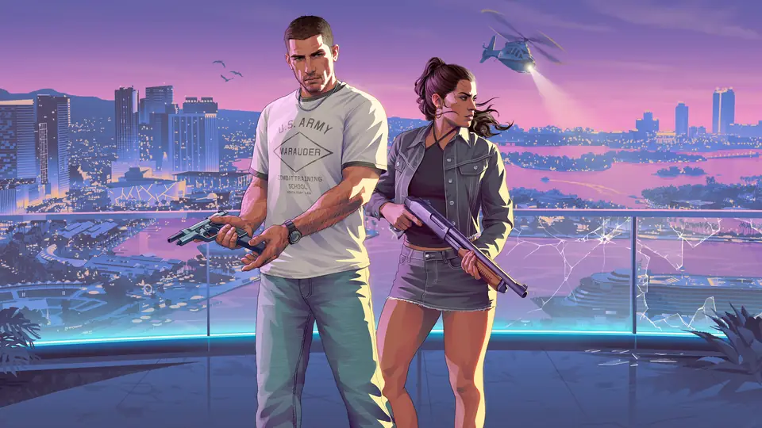

GTA 6 : date, heure de sortie, prix et plateformes (tout ce qui est officiel)

En bref : GTA 6 sort le jeudi 19 novembre 2026, à minuit heure locale, uniquement sur PS5 et Xbox Series X|S. Pas de version PC annoncée. Deux éditions : Standard (79,99 €) et Ultimate (99,99 €). Le préchargement est ouvert depuis le 10 novembre.
Date de sortie de GTA 6
Rockstar Games a fixé la sortie de Grand Theft Auto VI au 19 novembre 2026. C'est la date affichée sur le site officiel du jeu. Au lancement, le jeu propose le mode histoire, avec Jason et Lucia dans l'État de Leonida et à Vice City.
À quelle heure sort GTA 6 chez toi ?
Le jeu se débloque à minuit, heure locale : chaque pays le reçoit à son propre minuit.
| Pays | Heure de déblocage |
|---|---|
| France, Belgique, Suisse, Luxembourg | jeudi 19 novembre, 00h00 (nuit de mercredi à jeudi) |
| Québec | jeudi 19 novembre, 00h00 heure du Québec (6 h après la France) |
| La Réunion, Antilles, autres territoires | minuit heure locale |
Conseil : laisse ta console en mode repos avec les mises à jour automatiques activées. Le patch du premier jour s'installera pendant la nuit.
Sur quelles consoles ?
- PlayStation 5 (et PS5 Pro)
- Xbox Series X et Xbox Series S
Pas de PS4, pas de Xbox One, pas de PC pour l'instant. Voir notre guide GTA 6 sur PC : ce qu'on sait.
Prix : Standard ou Ultimate ?
| Édition | Prix |
|---|---|
| Standard | 79,99 € |
| Ultimate | 99,99 € |
Les prix peuvent varier selon la boutique et les promotions. L'édition Ultimate ajoute 5 véhicules, des armes personnalisées, 4 boutiques exclusives et une mission spéciale : tout le détail dans Standard ou Ultimate : laquelle prendre ?. Toute précommande donne aussi le Vintage Vice City Pack.
Besoin d'une manette ou d'un disque de stockage avant le jour J ? Tout est dans notre guide ce qu'il te faut pour GTA 6.
Préchargement
Depuis le 10 novembre 2026, tous ceux qui ont précommandé le jeu en version numérique peuvent le précharger. Avec la version boîte contenant un code, le préchargement démarre dès que le code est activé. Pense à libérer de l'espace : le jeu sera volumineux.
La suite : ce qu'il faut faire avant de lancer GTA 6.
Questions fréquentes
Quand sort GTA 6 ?
Le 19 novembre 2026, sur PS5 et Xbox Series X|S.
À quelle heure sort GTA 6 en France ?
À minuit heure locale, soit dans la nuit du mercredi 18 au jeudi 19 novembre 2026.
Combien coûte GTA 6 ?
79,99 € en édition Standard et 99,99 € en édition Ultimate.
GTA 6 sort-il sur PC ?
Non. Aucune version PC n'est annoncée à ce jour.
Peut-on précharger GTA 6 ?
Oui, depuis le 10 novembre 2026 pour les précommandes numériques. Les précommandes en boîte avec code peuvent précharger dès l'activation du code.
Sources
- Site officiel GTA VI (Rockstar Games)
- Rockstar Newswire : Pre-Load Grand Theft Auto VI Now (10/11/2026)
- Rockstar Newswire : Pre-Load Begins on November 10 (03/11/2026)
- WeArePlayStation : prix confirmés en euros
À lire aussi
Standard ou Ultimate : laquelle prendre ?
Tout le contenu de l'édition Ultimate de GTA 6 (79,99 € contre 99,99 €) : voitures, armes, boutiques exclusives, mission spéciale. Notre avis pour choisir.
Bonus de précommande : Vintage Vice City Pack
Le Vintage Vice City Pack, bonus de précommande de GTA 6 : Vapid Stanier ’55 et son garage, tenues années 80 de Jason et Lucia, motif d'arme. Qui l'obtient et comment.
Tous les personnages de GTA 6
Qui sont Jason Duval et Lucia Caminos, les héros de GTA 6 ? Et Cal, Boobie, Dre'Quan, Real Dimez, Raul, Brian ? Les 8 personnages officiels expliqués, sans spoiler.
Carte de GTA 6 : les 6 régions de Leonida
La carte de GTA 6 expliquée : l'État de Leonida, Vice City, les Leonida Keys, Grassrivers, Port Gellhorn, Ambrosia et le mont Kalaga. Ce qu'on trouve dans chaque région.